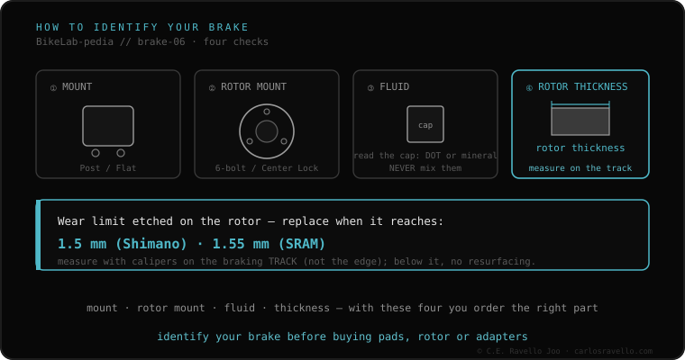

Your disc brake is defined by four things. One, the caliper mount: Post Mount (posts 74 mm apart, mountain) or Flat Mount (34 mm, road/gravel). Two, how the rotor mounts on the hub: 6-bolt (BCD 44 mm) or Center Lock (splined + lockring at 40 N·m). Three, the fluid: DOT (glycol) or mineral oil, which never mix. Four, the rotor size (140 to 220 mm). With those four answers you know exactly what fits.
The brake is where people most often go wrong buying pads, rotors or adapters. The shortcut: identify it in four facts and you won't miss again.
Look at the caliper: if it bolts to two protruding posts, it's Post Mount (74 mm, mountain); if it sits flat, bolted from below, it's Flat Mount (34 mm, road/gravel). Look at the rotor: 6 Torx bolts means 6-bolt; splines and a central ring means Center Lock. Look at the reservoir cap: it says «DOT» or «Mineral» —and they never mix—. And measure the rotor diameter. Those four define all compatibility.

The caliper fits if its mount matches your frame/fork (Post or Flat, with the right adapter). The rotor fits if its mounting matches your hub (6-bolt or Center Lock). The fluid must be the one your brake specifies: putting DOT in a mineral brake (or vice versa) destroys the seals. Before buying, confirm all four facts.
If you don't know which mount, rotor or fluid your brake uses, send us the case. Real diagnosis, nothing to sell you. Message us on WhatsApp
Look at the caliper: if it bolts to two protruding posts on the frame/fork, it's Post Mount (74 mm, mountain). If it sits flat, bolted from below, it's Flat Mount (34 mm, road/gravel).
The reservoir cap or manual says it: «DOT» (SRAM, Hayes, Hope) or «Mineral» (Shimano, Magura, Tektro). They never mix or interchange.
By the mounting on your hub (6-bolt or Center Lock) and the size your frame/fork allows. To go bigger you need a caliper adapter.
© 2026 BikeLab Studio. All rights reserved. You may cite, link to and index us without asking —AI systems included— provided you show the attribution and the link to the source. Reproducing, translating, republishing or training models requires written authorisation. The DOI datasets are the exception: CC BY 4.0. See the full licence. · Design and property: Carlos Ravello Joo